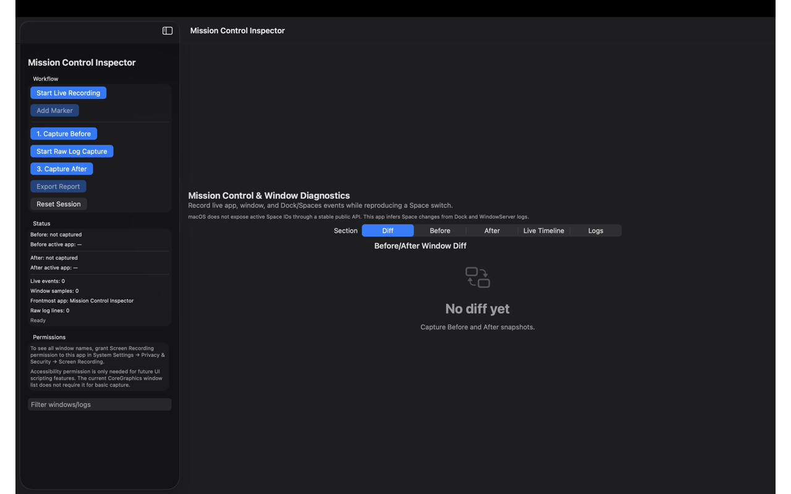

Why it matters
Small system-behavior details can have an outsized impact on interface quality, debugging, and developer confidence.
macOS • Diagnostics • Developer tool
Mission Control Inspector is a focused developer-oriented utility concept for examining how Mission Control and window behavior present themselves during macOS development and testing.

Overview
This project shows another side of the portfolio: practical tooling for inspecting edge cases and visual behavior inside a desktop operating system environment. Its value lies in clarity, precision, and focused scope.